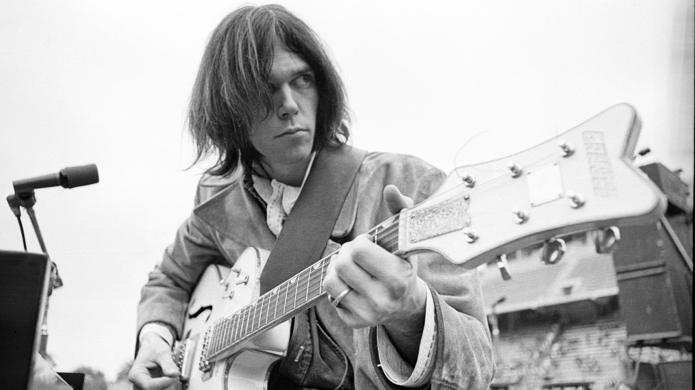

Neil Young
Kalitesine oranla hakettiğinin yarısı kadar dahi değer görmemiş yaşayan bir efsane.

Neil Young... Bu efsanevi folk-rock şarkıcısıyla tanışmayanlar, sizi bu gafletten kurtaracağım My my hey hey'deki solosuyla kendime bir mızıka edinmeme ve aynı şekilde çalamayınca mızıkaya happy birthday çalarak devam etmeme sebep olmuştur kendileri. Bebek gibi bir yüze ya da inanılmaz yakışıklı bir mizaca sahip olmayan bu adam kendini sadece sanatına adamıştır.Fikir sahibi olmak için öncelikle şu çok sevdiğim birkaç parçasını dinleyebilirsiniz.
Kliplerin çok eski olması sizi yanıltmasın Neil amcamız hala efsanevi işler çıkarmaya devam ediyor. Hatta şu sıralar 2013 yılı turnesine devam etmekte. Ancak maalesef Avrupa'nın birçok ülkesine uğrayacak olmasına rağmen Türkiye bu onura dahil olamayacak. Bununsa tek sorumlusunun işi uzatarak konser teklifinin geri çekilmesine neden olan ajans şirketi olduğunu öğrendim. Umarım birgün canlı performansını da izleme fırsatını bulurum. Ama önce 45 yıllık müzik kariyerine 35 albüm sığdıran, Tom Yorke'u bügün ki haline getiren, Dead Man filminin müzik yapımcısı ve Kurt Cobain'in intahar ederken ki dinlediği şarkının yazarı Neil amcamızı biraz daha iyi tanıyalım. Böylece Dylan'la beraber, yaşayan son rock ozanı hak ettiği değeri bulmuş olur.
Neil Young 12 Kasım 1945 doğumlu ve nedense hiç şaşırmadım ki oda Kanadalı. Kariyerine Buffalo Springfield ile başlamış ancak solo albümleriyle ünlenmiştir. Vokal, gitar ve harmonica ile yaptığı country müziği ile 1970'ler en parlak dönemi olmuş. Nirvana ve Pearl Jam gibi bir çok rock grubuna da ilham vermiştir. Ayrıca albümlerinde ve yaşantısında muhalif, barış yanlısı ve çevre dostu kişiliğinden asla taviz vermemiştir. Bu nedenle Neil amcada bizden biri sayılır.
Eddie Vedder'ın da "uncle Neil" diye bahsettiği Neil amcamızın şarkılarında gitar ve harmonicanın yarattığı etkiyle tutkuların Himalaya'larında süreğen devinim rüzgarları bir neşeli bir hüzünlü garip yolculuklara çıkarır bizi. Living with Me ile Amerika'nın Irak'ta ki zulmünü, Cortez Killer ile G.Amerika'yı keşfeden İspanyolların Kızılderili katliamını ve Southern Man ile de ırkçılığı lanetleriz. Dediğim gibi o bizden biri aslında. Tüm albümleri dinlemeniz mümkün olmayacaktır ama "Harvest" ile bir başlangıç yapabilirsiniz. Daha sonra Best of albümüne de bir göz atın derim. Aşağıda Kurt Cobain'in Neil'in my my hey hey şarkısındaki "ıt's better to burn out then to fade away" sözlerine atıfta bulunduğu intihar notunu görebilirsiniz.